:::::::::::::: {.columns align=center} ::: {.column width="60%"}
::: ::: {.column width="25%"}
::: ::::::::::::::
Реализовать модель "хищник-жертва" в xcos.
$$
\begin{cases}
\dot x = ax - bxy \\
\dot y = cxy - dy,
\end{cases}
$$
где x — количество жертв; y — количество хищников; a, b, c, d — коэффициенты, отражающие взаимодействия между видами.
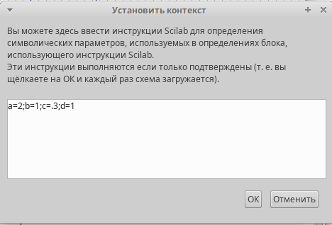
Задание переменных окружения в xcos для модели
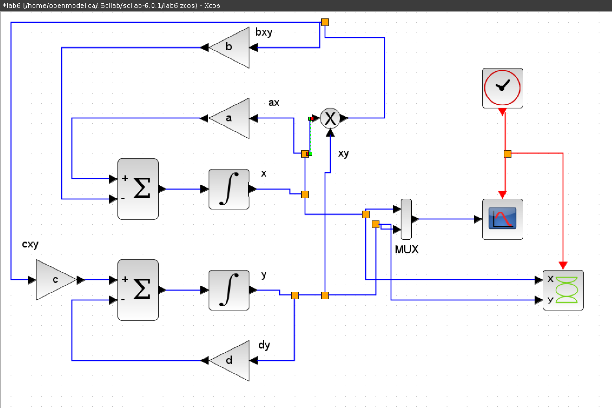
Модель «хищник–жертва» в xcos
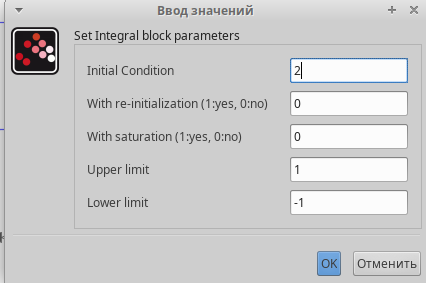
Задание начальных значений в блоках интегрирования
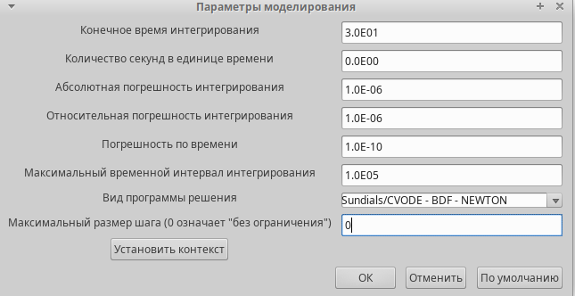
Задание параметров моделирования
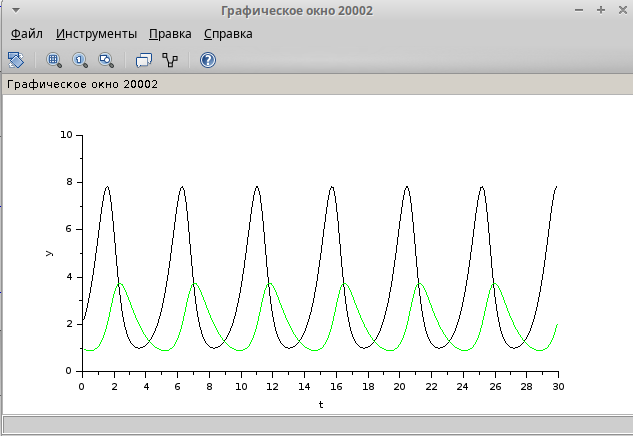
Динамика изменения численности хищников и жертв модели Лотки-Вольтерры при a = 2, b = 1, c = 0.3, d = 1, x(0)=2, y(0)=1
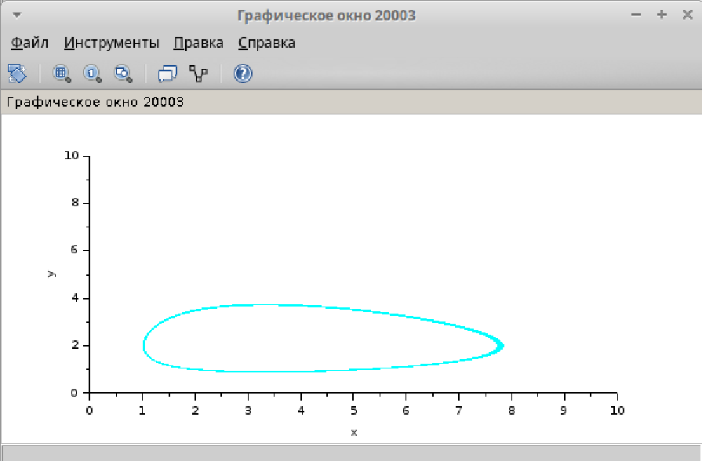
Фазовый портрет модели Лотки-Вольтерры при a = 2, b = 1, c = 0.3, d = 1, x(0)=2, y(0)=1
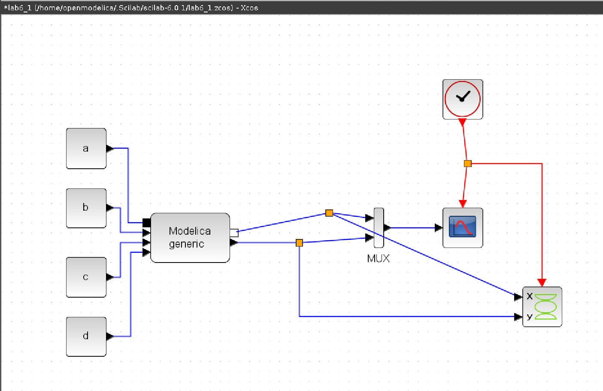
Модель «хищник–жертва» в xcos с применением блока Modelica
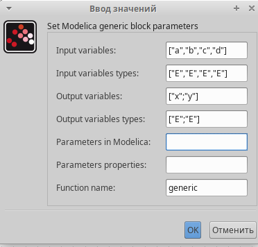
Параметры блока Modelica для модели "хищник–жертва"
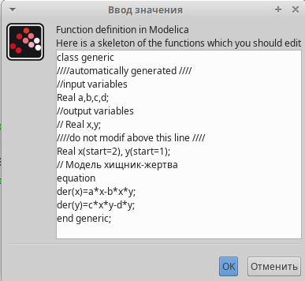
Параметры блока Modelica для модели "хищник–жертва"
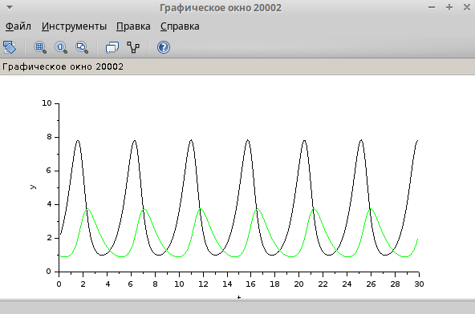
Динамика изменения численности хищников и жертв модели Лотки-Вольтерры при a = 2, b = 1, c = 0.3, d = 1, x(0)=2, y(0)=1
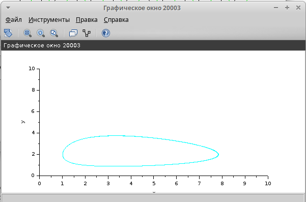
Фазовый портрет модели Лотки-Вольтерры при a = 2, b = 1, c = 0.3, d = 1, x(0)=2, y(0)=1
parameter Real a = 2;
parameter Real b = 1;
parameter Real c = 0.3;
parameter Real d = 1;
parameter Real x0 = 2;
parameter Real y0 = 1;
Real x(start=x0);
Real y(start=y0);
equation
der(x) = a*x - b*x*y;
der(y) = c*x*y - d*y;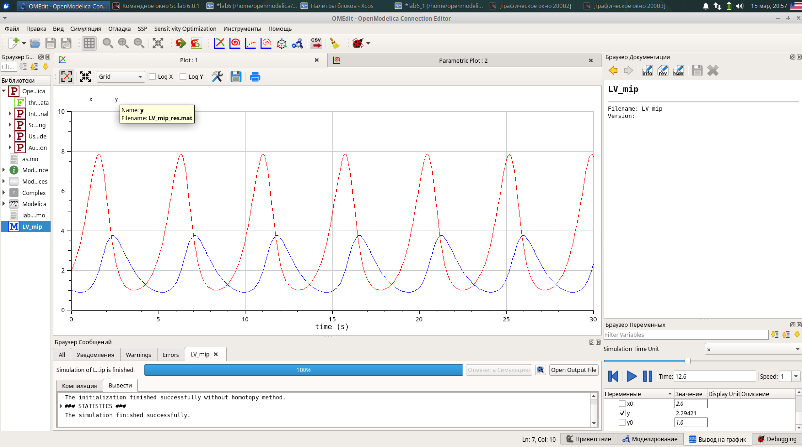
Динамика изменения численности хищников и жертв модели Лотки-Вольтерры при a = 2, b = 1, c = 0.3, d = 1, x(0)=2, y(0)=1
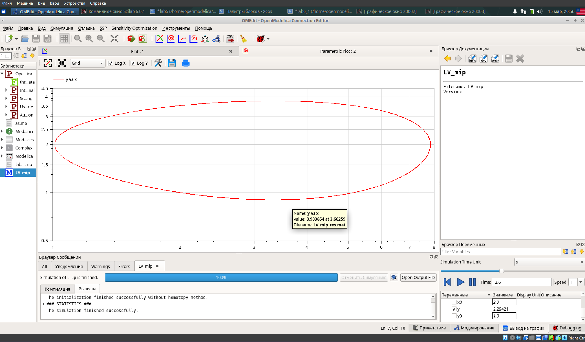
Фазовый портрет модели Лотки-Вольтерры при a = 2, b = 1, c = 0.3, d = 1, x(0)=2, y(0)=1
В процессе выполнения данной лабораторной реализована модель "хищник-жертва" в xcos.